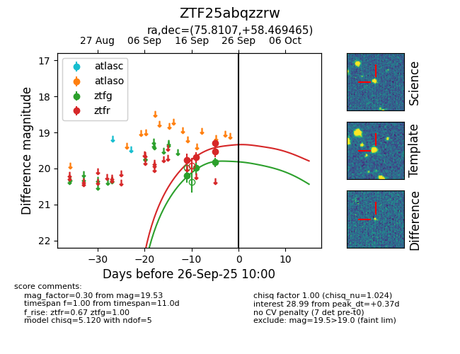
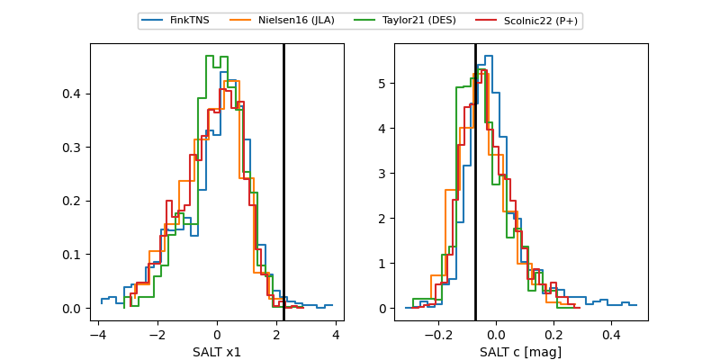

FINK: ZTF25abqzzrw
Lasair: ZTF25abqzzrw
ALeRCE: ZTF25abqzzrw
ZTF25abqzzrw (ztf,fink)
equatorial (ra, dec) = (75.8107,+58.46946)
galactic (l, b) = (151.1758,+10.19582)


last ztfg=19.83, ztfr=19.53
3 ztfg, 4 ztfr detections